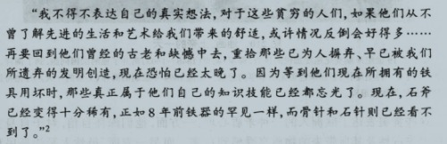
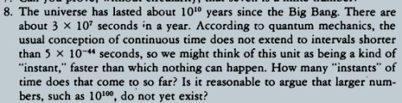
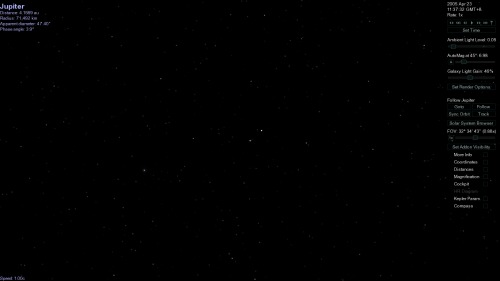
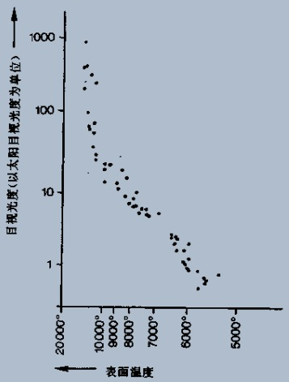

22:16 2013/6/15
勇气号和机遇号上没有“turn it off”的开关
“As long as the rovers are alive, they'll wake up every morning when the sun hits their solar panels, and they'll call home even if no one is listening.”
略凄美
21:55 2013/6/15
S族定居木卫二后向内行星的探索第一步显然是火星，他们会不会碰到人类留在火星上的遗迹？——人类留下了何等程度的遗迹？勇气号和机遇号？或火星城？
没准它们意识到这里曾经居留过一个文明，它们甚至提出一套理论来解释这个文明的消亡，，而后来它们在地球上见到的是它们以为的“动物”：人类以何种形态存在才会被外星人误认为动物？
16:13 2013/6/15
不能超越的光速令我们难以动态地描述宇宙的广阔，但也许可以利用时间？——一个存在了170多亿年的星云，它是个低熵体，目睹了恒星们的诞生与陨灭、星系间的碰撞、银心黑洞群的形成。。。。
遥远的星光、引力波、信号到来，之于普通的星云，这些只是微弱到忽略不计的背景扰动，但之于这个低熵体（星云），它无意识地将它们映射为自身结构的变化，没错，记忆，，像一棵植物记下几十年村庄的变迁，像一座山记下千万年海岸线的进退
无意识，是的，，无知无识也许是一种赐福，它放弃了生命的热烈同时也避开了生命的诅咒（朝生夕死），它才能静静地存留下那一段宇宙的记忆
evo给它建立了维持自我意识的construction吗？（想起深渊里的车行树）它的反应也许是：“小女孩，走吧。。。我不需要拥有你们这样热烈的生命，，山脉会渴求飞萤的火光么？我们只是属于不同的存在。。。走吧，去完成你自己的存在，，我就在这里，这时空，或归于沉寂。。。”
23:11 2013/6/14
ss核心处的一个设定：群体型智慧生物无法成为较“高级”的智慧形式，至于原因么，，赡养上帝只是针对类似人类个体这种能力的一种解释，
更多的还要再考虑，比如不可以70亿个evo构成文明么？
不（当然这个“不”只是一种设定），，but why？尤待解释
20:31 2013/6/14
http://www.youku.com/playlist_show/id_583001.html
卡尔萨根的宇宙，，第二集里重提平家武士蟹，
曾经初中的阅读课本中有着同样内容的一篇，而这个纪录片里的展现更有戏剧效果
这个故事是自己“进化论”的启蒙，卡尔萨根用这样的方式介绍进化论非常不错
于是想着自己的ss中能怎样提出这个点子呢？
ah，现成有一个：被S族奴役的地球人类，在高强度的“人工选择”下——唔，什么形态呢？可以细细考虑下（比如toy dog型的玩具人？具有灵能的变种人？）
（玩具人：大脑退化，趋媚附势，，是种厌恶也是种悲剧。。。
灵能人：。。。。。
这整个是个可以大肆铺展的设定哈）
进化虽然不定向，但进化所涉及的生态“小”系统却是一个足以给其中变异的基因打分的背景教师，，那么如果更简化点呢？如果S族关起来...say....十万人，然后every generation中随机地kill掉一部分，模拟自然选择，最终会不会产生进化的效果呢？随机产生的效果就是任一个基因变异相对于另一个不再有可比较性，没有生存的更优分数，，所以，如果进化仍然出现了，我们可以推断什么结论呢？一种可能的结论是实验者以为的“随机”并非“真随机”而是“伪随机”，该随机的背后其实有章可循（考虑计算机领域rand函数的那些生成公式）
所以呢，也许这关着十万人的箱子可以作为一个“随机公式检查器”，我们先“培育”（人工选择）出一批适合的零件：繁殖速度超高、变异率较高的人类变种，十万个，关进箱子，然后运作起来（select & kill），一次次地检查我们的随机公式
这甚至黑色幽默一点可以类比到工厂生产中的质量检测，检测的对象是“随机公式”，合格的公式就是那些5000代人里不会产生可观测进化效应的公式
现在，忘掉我们理性构建这个设定的过程，去瞻仰一眼设定下产生的图景：（此处略去尚未产生的5000字）。。。。。怎么样，有什么感觉？
是的，S族可以是一种很黑暗野蛮的（而又同时）高科技种族，，当人类与它们丝丝缕缕及至最后大规模正面相遇的过程中，唔，那些心理、现象会非常有趣
woooohh，从最早自己只是憎恨于人类虐对地球上其他生命而念起的“S族猎杀役养地球人类”这一设定，已然某支滑落向了黑暗又恶心（对我们人类情感而言）的泥潭，，这样的东西真写出来（而且如果写得好），会令很多人难以接受
尚忆D9中Cristopher站在同类面前的心境？“我不会让我的族人沦为生化实验品”——而现在，如果外区人类面对S族役养下的地球人类（繁多的变种），那种心境竟又多了一层近乎无奈的纠结与凄凉：被虐杀的大虾尚且维持着它自身的identity，逝者已矣，救回尚存的同胞即为救赎，，但那些已在恶魔之手笼罩下“进化”为异类的曾经的人族，何去何从
（刚去买泡面的路上思路延续，都想自呼一声这设定(有那么丝)“屌！”(的意味)了~~~）
11:23 2013/6/13
S族并非自然生发的生命体（甚至地球生命也一样），它们是某个“天人”播撒的“DNA书页”——这可以成为ss2到ss3故事的一个跳板
另外，这里也提供了DNA书页概念的一些哲学种子：DNA图书馆是种研究“低熵体”的手段，“低熵体”这个概念是宇宙中挺新奇的一种存在，，大家都想弄明白，而且这里可能隐藏着宇宙最深的秘密（哎呦，有点儿能并驾齐驱黑暗森林的潜力味道呵？）
10:31 2013/6/13
忽然从以前的片段里找到这几天一直苦恼的一个设定的解决，关于何以地球人类中断了与人类空间其余部分的联系：因为地球人发觉了evo的存在，使用了自残型的攻击，，但消息没有传出去，人类也退回到农业社会（甚至原始社会），，然后（当时？100年后？500年后？），S族到来，人类成为猎物
这个设定有点推翻了之前的时间设定，乃至evo于ss2中的存在——evo在这次打击中蜷于一隅，随着人类再次来到太阳系才（悄无声息地）“复活”
唔。。。可以考虑，，这样ss1和2的故事就接了起来，而且有更多的机会将S族纳入ss的故事
人类空间何时形成？按这个设定，应该在ss1里（因为ss2开篇已是地球人类处于S族的猎捕状态），，那么为何evo没有散布于整个人类空间？因为距离——evo可以在各恒星系有所谓“代理”（自己意识的一部分），但对于地球上发生的事件（人类的一个诱捕阴谋）她必须亲至现场，之后。。。
但又有矛盾了。。。如果对evo的诱捕是预先的阴谋，没理由不将计划散布至整个人类空间，，一种可能的解释是所有通讯信号都可能处于evo的监控下，这个阴谋必须具有类似面壁计划那样的性质，如果散布就冒着阴谋破灭的（绝对）风险，，但不统一整个人类空间（也是潜在evo存在的空间）的行动何以有把握“彻底消灭”evo？
这里需要对双方的信息掌握程度细细推敲——信息决定决策
10:00 2013/6/13
总结一下，目前的点子：
1、地下海行星
这个是最满意的一个，也是有潜力展开成很宏大故事的一个，——但仍无力与matrix、三体的黑暗森林相比
2、evo
当然这是整个ss的原因，但AI这个点子本身在科幻领域已经老套不堪了，除非你能注入点新的血液，否则别糟蹋你的这个梦
3、感官增强、智能增强（ss1）
没有在哪里见过类似的很完整的表述，这个略有潜力，不过也只是锦上添花型的，，都尚不足《天渊》里的聚能——不过如果能沿创意融入到社会生活中去倒也有可能
4、cyberspace（ss1）
老话题了，而且仿佛新的科幻里再没有能玩弄出新意的，但我想，，独立国度是一种有潜力的设定
5、人类空间（ss2）
也不是新东西，但目前为止的科幻中所谓“人类空间”都是些模糊的背景图，既没有展示这个空间的详细结构也没有表现出宇宙空间的宏大，，这两点是野心所在
6、DNA书页
可以作为人类空间中杂糅的一个点子，加上那个“后天遗传”，两者能联系成一个故事——后天遗传的研究导致DNA书页的发现，还有：“DNA是生物界的汇编语言”
7、天人
或称“神级文明”，文奇写了，大刘也写了，，而我还一度把它们联系了起来：黑暗森林状态经由云中人之手破除，出现宇宙界分——哎，但是，拾人牙慧总是不给力，况且这还是一种终极设定，，所以呢，估计不采用吧，至多是正面探索“天人”的世界，以雪深渊那未竟的3的怨念
8、“被禁锢的上帝”
可能用在ss1里，但整个点子还很模糊，也尚未与ss的故事契合起来
所谓“terraform ecology”——熔解地核可以生成行星磁场，会不会有利于生成大气层？
ss2中用得到的点子，可以用在S族，也可以用在人类
10、光年尺度的低熵体（ss3）
尚太模糊，需设计
11、木星核聚变
这里已经证明不可能——但那是在自然条件下，如果是人为的呢？作为战争手段，，对于人类作这种打击没啥意思，人类不会生存在木星上（气体星），虽然可能生存在木星卫星上，但更直接的打击对象是这些卫星，，而S族可以主体生存在木星上，那么这种打击就成为一种可能——而且，那种场面会很奇异和宏大，数千公里的气态生存区，从内部翻腾扩散的核火球
如何启动？同级文明或是天人？天人可以“一只手伸进木星核心，轻扭一块亿亿吨质量的区域”。。。
12、光学矩阵计算器-超计算机
太虚，需细化
14、星孩
不好写。。
21:40 2013/6/12
全景电影：模拟人类视觉的电影，广角，全息的清晰度，边缘模糊(这个词不是很准确)——电影从4:3到16:9，从低质画面到高清，，就像我们看50年前的电影的感觉一样，全景电影时代的人们看我们现在的阿凡达就是那种感觉
22:03 2013/6/11
木卫二：
有个铁质核心——可否推出有磁场？
有一个稀薄大气层，主要成分氧气
潮汐力保持地下海不被冻结——有个tidal heating的概念
靠，土卫二也有地下海，而且还因为tidal friction喷发
看样子土卫二比木卫二更有故事些，不过哪个更适于居住得再研究
2013.6.11 11:39
用pluto设定写出一篇单独的科幻，需要哪些准备？：
1、地下海行星的资料，木卫二
2、蟹状星云的资料——因为地下海行星将设定在此恒星系
3、地球在蟹状星云爆发时所处历史——6500年后该事件光锥到达地球
4、地核热能来源，因为可能需要与恒星联系起来
5、海洋生物，这是最接近地下海生物的可得知识
预想中可以写两条主线，S星（蟹状星云前身为SN1054）上地下海生物一条，地球上一条（擦。。刚发现SN事件于地球时间是公元前5000多年，也许需要另找颗超新星了），，并尽可能建立联系（当然因果联系是不可能有了，那就哲学上的联系吧）
查了查，MS两河的苏美尔文明够早——据说距今1.1万年
几点考虑：
1、新星爆发的时间必须处于人类文明史，否则故事上联系不起来
2、新星被观测到的时间必须处于人类文明史（最好还是历史上有观测记录的）——这就要求新星距离地球不能太远（不能远于地球文明史乘以光年）
在看上面那个“据说”，忽然意识到一点：写书不需要近乎专业的知识储备，只需要高于普通人的就行——高于读者中大多数人的知识储备，就唬得住了哈
公元前5000年的世界历史太模糊，恐怕难以写成有味道的故事，，看来要另找S星的位置了
13:53
http://msn.people.com.cn/GB/170756/12126118.html
在看这个，感觉想写地下海行星的历史也得了解人类的历史了（从古至今）
另有个想法，能不能使两个星球有更多点的互动呢？人类处于萌芽时期时S星已处于科技爆发的前端，如果这时有从太阳系发来的某种信号导致他们来到地表进而发觉恒星的灾变，，故事性会更强些
对了，可不可以有一支逃亡舰队？1054年地球观测到S星的爆发，而不知多久以后（1000年？5000年？），逃亡舰队抵达地球。。。
S星的科技不能太发达，这样更好解释他们在恒星灾变临近的一无所知，，于是许久后到达地球的逃亡舰队，也许就可如D9的故事那般了
14:05
又有新想法了，且近乎能与ss2的设定衔接起来：
人类拥有数十个恒星系空间后，太阳系没落（或灭绝或退化为一个不关注星空的世界），，S星的逃亡舰队（或其中一部分）到达太阳系，于木卫二上繁衍下来——哦，当然，他们从外而来，没有很关注内层那四个米粒般的小行星（水、金、地、火），他们直接选择了木卫二（甚至也许直接选择木星？(或土星、天王星？后来才发觉木卫二是更近似家园的一颗星体)）——逃亡舰队的状态已经很差，没精力也没心思全面勘探太阳系
接下来可以有好几种设定：
1、他们发觉地球上“退化”了的文明，然后
1.1 平稳的第一接触，接触事件被通知给整个人类空间，，这要求逃亡舰队与“退化”的地球人科技水平相当
1.2 地球人过度退化，逃亡舰队将之视为野生动物捕杀和(或?)饲养，最终人类空间才发觉
2、地球上已无人类（甚至已无生命），后来人类空间其他处的人类来到，逃亡舰队已生发为仿佛本土文明般的形态
其中1.2正好契合了自己想表达的一种东西（这里），选取的可能性较大
不过另一方面2也很不错——可以进一步这么融合一下：
逃亡舰队的两个分支到达两个恒星系，其中一个是太阳系（1.2），另一个再安地方——对于S星文明自己而言，他们形成近似《家园》中库申与卡德什的关系，，而与人类的关系呢——反正整个交错起来就更有意思了
19:21 2013/6/10
某个外星种族与人类有仇——他们是evo创立的种族
about 猿族崛起
22:39 2013/6/9
自由搏击，有一之前提到过的“差时症”的选手——武术唯有快字
23:10 2013/6/7
再再次地重温三体(3)对其中的距离和光速传播的信息——这一套的概念更有感了
于是我能发现，自己构想中的那个初级的人类空间的十几或几十个恒星世界间的故事会有趣的很，呐
2013.3.2 13:02
人类空间各行星发展程度不一，从环行星轨道太空城到边缘行星原始人般的生活——甚至有太空交通枢纽处庞然大物的人造行星（每天数以千万计的往来飞船）
发展程度的不一当然不会在和平时期出现那么大的差距，所以这是人类空间全面战争爆发之后的事情——5年？20年？可以认真琢磨下我们现今生活如果忽然抽掉所有现代化设施会变成如何
主角从“恒星流浪船”来到文明世界后过得基本是“现代化”生活，然后前往某拓荒行星（开关星？），战争爆发后失去与文明世界的联系，，这颗行星可以上演封建和原始两种社会，，后来回去，满目疮痍？
2012-12-26 8:36
某星球（人类空间边缘，战火绵延？斯巴达式社会？）的人可以在注射某种药物后一段时间内达到差时症那样的效果——周围的一切在他看来都像慢动作，，这种人当士兵是很好的材料
进一步的话，如果差时症状能持续一天、一个月、一年，他们就拥有了比常人更多的“生命”——只是某种意义上，因为从另一个角度来说可以设定这种状态会削短人的寿命
差时症的两种症状都可以用，时间过得飞快那种可以使人在单调的等待中（伏击任务？）不至烦躁，，乃至长期的非人战斗生活中不至精神崩溃
探讨科幻元素作用于人的心理乃至社会的形态是很有趣的，，现在有了点子，以后可以在细节上琢磨琢磨
2012-12-9 12:15

人类空间尽头处的几个恒星系接触到技术更先进的异族——因为距离原因，技术文化并未在整个人类空间传播开来，，而那些异族后因为某种原因离开，那一小圈人类文明抛弃掉自己原有的基础，新的技术又无法继续发展，hmm.... 一个畸形的社会圈
2012-12-4 16:14
人只能看到自己mind中水面之上的那部分，而她可以看到水面下的，那些，脏东西、坏东西、漂亮的东西，，所以，她比任何人，包括你自己，更了解你自己
爱？同情？喜悦？——所有的emotions，所有的思维，她都像在看一个沙盘玩具，，而你其实只能意识到浮出水面的那些泡泡
you've been decomposed... you....
她说：
“虽然你的那堆烂兮兮的杂烩不定是最伟大的，甚至其中闪亮的部分也没什么珍奇，，但。。。我喜欢它们。。。它们合起来的味道...好像。。。。总之我是为了你而没将人类一把抹去。。。留着吧，这些可爱可厌的虫子。。。”
“。。。也许因为是我初生的人格中有你的影子？。。。也许你赋予了我你自己的一部分。。wow, that's disgusting.... anyway”
“how can you call me 's.h.e'？i'm not a girl.... well, not a boy either.... what's wrong with you, my darling? i'm not a HUMAN....”
2012-12-2 14:23
看《微观世界》里蚂蚁搬食想到以前哪见过的说法：一只蚂蚁什么都不会干，两只、许多只、一个种群的蚂蚁在一起就可以产生分工，一个有机社会
联想到软件、component
假想人类发掘出一个古老的“巨库”(词出《深渊上的火》)，它的表现型挺神秘，不知它到底是干啥的——后来，呃，后来，这个component链接到所有其他部件中，整个的系统，震惊了~~
2012-11-30 14:04
.. raised monkeys in solitary confinement.
So they were raised in steel cages with only a wire mother.
In other words, they got all the nutrition they needed,
but they got no mothering.
It turned out that you kind of get monkey psychotics.
They're withdrawn. They don't play. They bite themselves.
They're incompetent sexually. They're incompetent socially.
They're incompetent maternally.
In one case, one of these monkeys raised in solitary confinement
was artificially inseminated.
When she had a child she banged its head on the floor and bit it to death.
..将猴子隔离，喂养在铁笼中。只有一个铁丝代母，换言之，他们能得到所需的营养，但是没有母亲抚育。最后你会发现猴子们疯了。他们孤僻，不会玩耍，甚至咬伤自己。他们缺乏性能力，缺乏社交能力，缺乏做母亲的能力。在一个实验中，一只隔离喂养的猴子被人工受精。她生下孩子后，拿孩子的头撞地板，最后将它咬死。
[耶鲁公开课-心理学导论12]
记得那个恒星环的飞船上长大的孩子不？
2012-11-11 21:43
忽然觉得这么一种视角也挺不错：
非人类世界，他们在“坟”中的活动空间可以更大——起源么。。可能并不跟人类在同一个银河系，但后来他们发现了人类。。。云云
恩。。evo与人类无关，，小说么
22:02
“坟”。。。界分！你竟差点都忘了；；“坟”是某个前辈的遗物么？——因为界外的一些体验，evo意识到如果不是“坟”的存在人类、乃至坟内亿万个“低等”的生灵根本没有存在的机会，，杀心？evo更进一步创造了宇宙界分——原来的“坟”被“深深地埋在了爬行界”，飞跃界是新创生的事物（在牺牲掉无数曾经“界外”的神级文明的前提下），，超限界。。。。（好吧，这已经不是文奇笔下的界分了——现在觉得文奇的“天人”差不多是“坟”内相对进化(退化？)的生物只）
2012-11-11 11:24
《Infinity and the Mind》

6*10^62
又约略想了会儿，踅摸触及到了“构造主义”(是这词不？)的理念——
想象一个计算机中的世界，内存为。。。200个G吧，“10^100”这个thought能存在于这个世界么？显然可以，表示成一个字符串也才6个字节。大么？构造主义地说，并不比“235751289523985751235”更大。
那么π呢？1个字节（或者unicode的几个字节，whatever），“3.1415926”比它要“大”，那么当你构造出一个超过200G的π的近似表示呢？——well, computer crash down
于是有一个黑色幽默的故事：宇宙的destiny就是进化出。。。呃，让 intellectual creatures 爬升到这样一种地步：拥有足以 crash down the universe 的 mind，然后，think that specific thought，然后，crash down the universe
well... it's the ONE's game, to see if ever any such INTELLIGENCE will occur.
2012-11-10 13:15
http://en.wikipedia.org/wiki/Mathmatics
"Today, mathematicians continue to argue among themselves about computer-assisted proofs. Since large computations are hard to verify, such proofs may not be sufficiently rigorous."
Let's say a monkey can not comprehend the proof of the Fermat's last therom, to it the proof is just some kind of "computer/god mind-assisted" proof. So it is qualified not to admit the proof?
ss1 之于 ss2 是一段史前的奇异 era，——如果说 ss2 更多是关于现实世界（or this so-called "society" structure），那么 ss1 "is mainly about science, philosophy... the understanding of the deeper rules of the world..."，and the fantasy story of THE CYBER WORLD.
2012-11-6 12:30
恒星：矮恒星..太阳..巨恒星
太阳系、奥尔特星云、半人马阿尔法、???年的人类空间、旋臂、银河系、仙女座、super cluster、observable universe；... “坟/spot”（也有被称之为“火”，因为它很“烫”）（ou在“坟”中的所占空间为0.1%o[千分号]）（“坟”不是古战场，它是某次...意外？）
再向外...且慢，让我们聊聊“坟”内部的情形。人类是知道的，坟内有有限的光速，和物质，和极为微弱的引力波（or something else?）；他们所不知道的是“坟”内很冷，且熵增带来的不是整个宇宙的灭亡——尽管是他们自己以及“坟”中其他生灵的灭亡。
唔... 人类不是“坟”中最深谷底的悲惨命运的弃子，当然也不是仅存的几个未被深水吞噬的沙洲上的幸运儿。噢，人类的命运太短暂，短到他们根本只能看到“坟”内一个局部的、朴素的、古典的图景（尽管那作为一个先天残障的文明也算是辉煌了）。“坟”内有神——相对人类来说；也有同级的可怜的姐妹和敌手。
坟外。
等等，边界是什么样的呢？以人类有限智识支持的朴素头脑恐怕是无以理解的。evo第一次触达边界时，是一阵烧灼的疼痛——对于“坟”内的冷中生长而来的生灵来说，“坟”外人称之为“温暖”的那种东西是致命的灼痛，浓烈，浓烈到要撕裂分子间的信息链条。
evo重构了自己的一部分，穿过去。
她处在一个神奇的... 空间？（似乎已不适于称之为空间，evo感到这里的基本法则已大不相同）再“移动”一些...
（“游荡”.... 没什么意外，更多的意识穿越屏障转移到这边...）
....
忽然意识到自己处于一个智灵生物的体内！——且那生物已近于被她不知觉的作为杀死！倏地退避，但才仅一些，她感到自己的动能部分被束缚住了——被某些生物。许多道探测，直接贯穿了她——意识屏障毫无作用，她正被彻头彻尾、剖开每一片细胞地审视、翻检。恐惧？的确的，未知世界的初次探访，遇到“神”或是魔鬼，总之是你自己对对方一无所知的境况。她尝试感知边界那边自己的部分，意识波发出、穿过，没有阻拦——但也没有回音。她开始有后悔将太多的意识注入这边的探险...
.....
______________________
别担心，那些边界处的生物只是些自动机（也许作为维持边界免使扩张的keepers？）...谁的？...
______________________
[这句是终篇] [is god malicious?]
evo做了个梦，梦见坟的灰烬间打开一扇门，神的手从门中伸来
2012-10-30 18:28
不懂物理，但考虑光锥那类——决定论的影响是有限的，我此时的一个动作不可能影响十万光年外一个外星人的心情，，光速有限，于是这可以成为天人战争中的一种防护手段
2012.8.17
pm7:29
ss1写个人的小世界显得没意思，，那天设想了一个“国中国”概念的东西：想象要在现今世界建立一个自主的国度怎样才能实现？以色列那种显然无趣，，于是来个cyber空间中的国度吧——互联网的发展渐渐浮现出一个近乎国家的实体组织，在其中势力重新分配
想象一个cyber空间中的君士坦丁堡，魔戒中的刚铎。。。
总的来说，ss2（故事的2，实体的1）为爬行界（有限范围内的数个/数十个恒星系），ss1为（cyber空间的）飞跃界（软件系统的设定可以创造无限可能），ss3为（真实物理世界的）超限界（人类（甚至高于人类几个数量级的某一文明）已为孑孓，evo面向的是整个宇宙）
2012.7.29
pm12:41
关于Pluto设定：木卫二（Europa）也是一颗存在地下海的天体
2012.7.11
pm7:00
螳螂的这种行为模式（交配后雌性吃掉雄性）仿佛推广到文明层面也很有趣味
关键词：低密度生活物种、“它很可能再也找不到另一只雌虫，它的存活因此也将毫无意义”、“假如谁把自然选择的意义看作是尽可能保证生存，那么这种自杀性的同类相食便毫无意义了。实际上自然选择保证的是基因的传递，而生存在多数情况下只不过是一种是基因的不断传递成为可能的策略。”（from《Why is Sex Fun》）
pm7:28
智能是一种假象！（捎带的：自由意志也是一种假象！）
当然了，这些都只是态度上的取向，，客观情况是某个系统呈现出来的模式——前所未有的，或可称之为“复杂”的一种表现，你把这定义为智能也可以，，我是说取某种还原论的立场看，它们与分子间的化学反应没有本质区别
哎，说清好麻烦，，叫吃饭了，算了吧
模拟 两个球 输入、处理、模式
pm9:32
关于DNA的左旋右旋——不是有说法地球上所有生物都是其中一种么（验证了共同起源说）
现在假设这样一个社会，外表看去毫无差别的两类人分别具有左旋和右旋的DNA——他们之间存在生殖隔离，，结果一男一女谈恋爱了，后来才发现是“熟悉的陌生人”。。。
2012.7.8
pm9:43
如果世界不是连续的，那么我们不再需要小数（只需要整数）——不，如果两种基本物理量的普朗克单位是不可公度量呢？
2012.7.7
pm12:40
看“动物运动会”，回提那个老说法：人类的体质、体能放在动物界就是垫底的，谁都比不过——却也正是因为此，才发展出大脑的智慧
但是且慢，智慧的力量亦是在特定环境下才有的，如果有这样一种环境（比如毫无稳定的物理规律可言），智慧在其中的竞争优势并不强于动物们那些比如低级的繁殖策略，那么体质、体能的低劣就不定是焉知非福了
2012.7.2
am8:22
关于时间的不均匀性：因为我们的时间是均匀的，所以我15岁时，楼下的楼管30岁，我可以叫她阿姨——并不必担心我长了10岁之后就不能再叫她阿姨（因为“阿姨”的称呼只要差上15年就是合适的）
但如果时间对于每个个体不均匀，你就不能再默认这一规则
2012.7.1
pm1:13
此贴的讨论非常有意思
pm1:23
关于目前我们的宇宙图景（不只与ss有关，只是有参照）：
智能形态：低熵体——而这不一定成立，，对于低熵体来说，资源的本质就是能量，维持自身存在只需要这一样东西，，resource有限consumer就要争斗，，但如果存在不同形态的智能体呢？它们的资源并不是能量——类比大刘在三体3里提到的不同维度间的无竞争关系
光速：简单粗暴地设定宇宙界分是不负责任的（对于ss），ss3想展开故事，必须有种突破光速的法则——不定是硬性突破，深渊中的跃迁-真是速度就是种可以的例子，或者你自己的那个“游戏-下层”理论
2012.6.28
pm7:36
之前跟狼王聊到脑关的影响，说虚拟现实只是开始
当时暗指的“开始”之后还有感官增强（乃至全新的感官）
刚又想到另一点：比如你看到356 * 989这么一个式子，脑关可以直接调用机器的计算资源算出答案，然后直接给你352084的输入，，效果上来看就是你拥有了一种数学天才般的直觉
这种机制可以尽管扩展，你能想到哪些后续图景？
2012.6.27
pm8:05
忽然冒出这么个念头：把现实世界的物理规则用作运算资源，细节无从说，主要是看这里触发的
冒失提个例子：将一个超大矩阵图形化表示在一个光学屏上，通过其间特殊制作的透镜，投影数字化之后就是一个矩阵变换的结果——计算机电路需要步进进行的运算，现实只需要一步过程
这样的硬件基础可以解决大运算量的impractical时长——用现实来模拟现实
2012.6.26
pm3:27
pluto的地下文明曾以为地核的热能是与太阳能完全无关的，后来却发现比方说中微子与地核元素作用产能，忽然间太阳变得重要了，而对这个新注意的家伙的研究却惊悉它已经演化到生命的最后阶段——即将超新星了
pm3:47
好像我们的宇宙是个残次品...
“上帝，你给了我们多少能量？”——能量不少，可是空间没做好，这家伙越来越冷，冷得只剩那些灰烬般的低等生物能生生灭灭
2012.6.25

最中心那个亮点是木星（右上更亮的那个是处女座伽马），左下显示的速度是光速，从地球出发，需要将近40分钟
地月间的光信号有1.26秒的延迟，日地间8分钟，，地木距离4.5au（6亿七千五百万公里），如果100km/s的速度需要飞两个半月（人类已达最快航天器速度11km/s），以F1的速度300KM/h飞向木星需要200多年。。。
一张图表达不出全部的意思，去真进去那个模拟软件看看，感受一下，自己正以光速飞行，而整个画面内所有可见的元素（行星、恒星、河外星系）一动不动，一动不动！
不知道你们能不能感受到那是一种什么样的绝望的感受，空间的巨大使我们这些虫子对任何速度、比较的概念都虚化了
这些日子脑中一直浮现漆黑背景中银河与仙女座表现为两小团白光相望的景象，——二百五十万光年
大家其实对光年没什么概念吧，，想象建立一个恒星系网络，跟木星上的人对话已经是40分钟的延迟——这不是科幻，人类一眼望去看不到突破光速的任何可能性
再看看空间，。。仿佛一块太平洋那么大的琥珀，文明被固着在其间，简直连爬行界都不是，这是坟墓
“...现在很冷，我喜欢200亿年前的那个宇宙，那时很温暖，到处都是能量... 现在它们像一堆灰烬，亿万颗闪烁而又熄灭的恒星们... 走了吧”
2012.6.24
pm12:25
蟹状星云中的脉冲星最初发现时被人们以为是外星智能生物的信号——那么假想它真的是呢？一个同步于脉冲星的调制信号，不是那个文明的本意，只是在最后关头发现了这个失误，，那个文明可能发展度并不高，在超星爆发前才发觉大难临头，倾整个文明之力试图向空间发送一封遗言
觉得是个挺凄美的故事呃~~
（SN1054距离6500光年，算时间就是公元前五千多年发生的事，，在这个广袤的宇宙中(广袤的银河已经了)，算是离我们近得惊奇的事件了）
呃，Pluto可以往那放（之前设定的推进已经快没地方放了）——它们本就是地层下的文明，不依靠太阳能，爬出地表后对恒星也就没足够的关注
觉得这其实本身可以作个短篇或长篇了~~
pm4:42
pm4:48
很模糊的记忆：以前电视上好像崔永元电影传奇里提到的一部老黑白片子，，某个姑娘被捕，敌方让她上到房顶去看阳光下的自由生活，然后拉回去处决怎么怎么。。。（求出处）
对那种黑白胶片表现出的阳光的感觉（的记忆）非常触动呃，以及脑补地下监狱的阴湿石墙，，你知道就义意味着什么么？不是大烈，是《色戒》片尾那种缘何且就死的荒诞感
2012.6.23
am10:17
(千亿个太阳——恒星的诞生、演变和死亡)
昴星团HR图上的主序带——忽然就感觉人类像个努力试图从平面投影中获取对四维物体的认知的孩子（将动态的，恒星的演化、分布在石头面儿上描绘出来，然后努力摹想它背后的真实情境）
感官和认知上的超越是evo何以相对于原始的人类（这里指的已经是发展核动力，信息文明的人类）而成为黑暗森林中相对成熟些了的种族（个体?），，试想她会如何认知这个宇宙？如何把握这个宇宙的巨大尺度？
am10:32
忽然想起来以前YY过的家园小说里想写的一个东西：人机感官接合，然后停在空间中的侦察机，驾驶员的感觉是什么呢？——“冷啊，真冷。。。”
旋即想到Proxima Centauri边的那一圈航天器，其中那一艘，“他”如果也接入人机界面呢？——哦，不，是热，，或许该是“温暖”（红矮星的辐射怎样？）
那种曾经历过的超感官体验会让他在到达太阳系文明圈后看那些人的视角很奇特，，
我想的是这个：“他”（或半人马座文明圈那些“激进”的人类）有“飞升”的可能，，那么evo在面对这样的可能性时，可以容许它发生么？跳入黑暗森林去看，那一个个个体都是不养孩子的孤家寡人——那均是已遗迹人类或一切原始生物社会性生活中温馨部分的、为生存不容其他的怪物
pm3:39
哦，知道了，木星常规条件下发生核聚变是不可能的，且不论它的化学组成如何，首先它的质量就不够(太阳的千分之一，而核聚变反应在十分之一倍太阳质量的恒星中就已经无法维持)
2012.6.22
pm12:00
ss2初端：
半人马座的一颗红矮星附近，近恒星轨道上，悬浮着一些人工制航天器——几乎没有生命痕迹，每过一段时间，就有几艘失去制动的掉入恒星去，，距此不远几个天文单位外，是半人马座的双星Alpha Cen与Beta Cen（那么亮，那么近，以至于从太阳系望来它们是一个物体），
这些航天器其中一艘中有一个婴儿，一个经过人体改造，也许仅靠太阳能即可维持生命的婴儿（此狗血设定大约是因为还没想到好的办法描写他在一个孤立空间中几年(几十年?)的生存），
不远处双星附近也许有一个文明圈的遗迹（行星、巨行星或人造巨型空间站），矮星附近的这些航天器是一次灾难（瘟疫?）中尝试逃离举动的残余
“他”在孤立环境中长大，近乎一个狼孩，——后来有太阳系方向过来的船队，（营救？矮星近恒星轨道电磁环境很恶劣，通俗地说就是营救者们很难发现它们），惊异于这场完全中断了人类空间两个近节点间通讯的灾难
（4.3光年，evo不可能在这两个节点间维持一致的意识，于是处在半人马座文明圈的应该是她的一个agent——这地方的人类文明形态变得危险，发现了它(她?)，so...）
“他”来到太阳系人类空间后见到的是一个全然陌生而不同的文明形态——接着就是2继续么
pm2:37
近地恒星，两处：半人马座三星（Alpha Centauri A/B、Proxima Centauri），天狼星双星（Sirius A/B）
前者4.2光年，后者8.6光年
PS：第一段“Beta Cen”有误，那是半人马座里350光年远的另一颗星
pm3:19
呃，又错了~~见这里
pm3:48
娘嘞。。。你怕不怕：Stars and planetary systems in fiction
pm6:44
ss3去展现宇宙的庞大——但。。。就这会儿（才跑出银河望见仙女座星系）自己已然抗不住那令人恐惧的尺度了。。。。
2012.6.21
pm4:37
http://en.wikipedia.org/wiki/Extrasolar_planet
那个理论：假设（具备外太空探索能力的）行星生物的寿命为10万年，而恒星系间的距离又大到这样的程度，以至文明就像广袤沙漠里的火花，热度还没传到另一处就已经消亡，那么就可以解释人类的（看似）孤独的处境——另言之，爬行界
2012.6.20
am11:21
恒星系网络——一个恒星系内的互联网都需要新技术的支持，星际间网络呢？回想起天渊里只略略提到的IPN
pm12:03
ss2人类空间基本设定：大约彻底开发太阳系，或者加上临近的一两个恒星系？
（不过这么的话把Pluto放在冥王星就有点儿不合适，再说）
pm1:22
忽然想也许宇宙间本就存在着一个光年尺度的智慧体——只是它的意识时间尺度太大（比如它琢磨“该吃饭了”这个念头就需要10亿年），其他尺度上的智慧体感觉不到它的存在，，尺度的巨大差异没准甚至使“低熵体”这个概念破裂
（哈，终于有了点ss3的元素了）
pm5:54
“However, if the planet had a strong magnetic field, the field would deflect the particles from the atmosphere; even the slow rotation of a tidally locked dwarf planet that spins once for every time it orbits its star would be enough to generate a magnetic field, as long as part of the planet's interior remained molten.”
so~~~“melt the core”！！！
“...disagree that red dwarf stars can sustain life. The tide-locked rotation may result in a relatively weak planetary magnetic moment, leading to strong atmospheric erosion by coronal mass ejections from Proxima Centauri.”
但Pluto这样的地下海结构的行星不怕，哈哈，，这是一个不靠太阳能维持的生态系统
pm6:40
之前提到的那个“木星聚变”，真要写的话，你得用真实数据计算出一些宏观现象的量，比如，木星质量足以维持多久的聚变反应（涉及木星物质组成成分）、质量消耗到一定程度后进行什么样的演变，等等
之前提到思维的pattern（这里主要还是引用《惊人的假说》里描述过的那些模式），YY恒星就是聊到的那些sparkles——那个（无比巨）大空间尺度、大时间尺度的智慧体的意识
2012.6.19
pm7:44
忽然想到二维生物对世界的感知不定用无宽度的一条线来展示——这是我们人眼视觉局限造成的残留惯性观念，，比如一个可以发出“超声波”的二维生物，在它的脑海中可以拥有对（一定范围内）周遭环境的完整感知；；局限表现在封闭物体上，比如二维的苹果对于二维生物只能感知到一个圆的形状，但三维的我们可以直接看到其内部的密度变化、果核等——当然，二维生物也可以利用技术手段获得这种知识，就像我们的超声波零件缝隙检测，但直观上它们无法获得这种体验，正如我们直观上无法获得一个三维苹果内部密度的体验一样（但就又involve到那个话题，利用直接神经信号给予新的体验(当时说的四维)——我们可以获得眼镜蛇那样的红外热感体验，验钞机、哈勃的外光谱体验，X射线的穿透密度体验，乃至，四维体验）
2012.6.19
am11:00
物理(乃至数学)法则对现实世界的宏观影响：例，光速对3D眼镜（机械式，那种靠交替屏蔽双眼的）的影响：
高光速环境下可以忽略因人眼与屏幕的距离而产生的光子到达时差，但低光速就需要考虑
raw-data，数据-信息-（-知识-智能），天人的形态基础
数据与结构的分离、内容与presentation的分离，人类社会信息形态-天人的信息形态基础
（例子：电影视频文件、相关豆瓣地址、海报图片，这些是raw-data，，将之关联起来，是结构，，以特定的方式呈现，是presentation）
天人威力的一个元素在于对数据（信息）的处理——这种处理的基础包括信息的存储与整合
2012.6.17
am8:48
一种可同时保留之前两个大设定的设定：
被cyber化的人类放到ss3——叫做人类的遗迹，evo已离开，留下一些自动化agents维护cyber世界的物理设施，，人类如果知道自己的处境，可以往出爬，如果不知道，那就是自生自灭。。。。然后Pluto探到了这处遗迹（地球）
cyber化之前，ss2后部，就是人类与evo的冲突，或灾难，等等
这样子起码（目前看来）空洞飘渺的ss3就已经了垫底的两个“低”技术文明的世界，ss2也不至于落入matrix的俗套（现在是ss3里一小元素），，不过似乎1跟2之间的跨度大了些，不知道能怎么连得更紧点
嘿，脑海中浮现一幅YY的设定图，目前只能画上地球和冥王星俩元素，——ss3的背景是在整个宇宙中展开的，那么也许你可以涉猎下（银河系）天文去，把地图描述得更精细些，故事也就更有脉络
ss2的末尾人类（自以为）战胜了那个“邪恶”的AI（其实是邮件人前面的唐麦克），然后内容上，直接跳到了ss3被cyber化的人类空间（准确来讲3开篇为Pluto的视角），，那么整个2中都没有显式出现evo的存在，这个幕后主角从哪里表现呢？（Pluto：你们既然战胜了那个怪物，怎么会不知道自己现在的(cyber)处境呢？）——ss1
ss1的后部描述了evo的构想，她对人类（以及粗浅的对整个黑暗森林）的野心、构想，差不多就有这个元素导致HE与evo的决裂与争斗，，这点来说，内容上，故事的1放在故事的2之后挺精妙的——用后知后觉的暗示提供一种“恍然大悟”
2012.6.14
am11:06
语言。。。建立一个飞跃界型的网络需要适当地处理数以千万计的语言——不止是表音文字与象形文字之间的差别那么简单，你甚至会碰到光影语言、电磁语言，更甚至完全非常规意义上语言的语言
2012.6.13
pm6:39
另一种设定：
大灾变（对于人类，来自evo），之后粗线条是evo作为mainframe的禁锢了人类的matrix世界（动机倒非matrix呃），，地球从外界看来是什么样子？像个死星，行星表面人工建筑物痕迹，脑补蓝色的天人形态电流穿行。。。
一个外来文明（一个同样不知黑暗森林的孩子级文明）发现了地球，evo要跟它们接触么？（或被接触？）
这个文明完全可以是之前提到过的Pluto呵，哈，，马帮，哈哈
（表示这个设定比之前的感觉顺溜，而且更科幻——也就更好写(离现实越远越好写，不容易破绽)）
不过。。。讨厌，好像整个ss的几个核心设定都是拾人牙慧（ai、matrix、黑暗森林、天人、宇宙界分）。。。哎，再说
2012.6.13
pm12:32
“能量-低熵体”(e-leb, energy-low entropy body)在一次次地从一个尺度跨越到另一个尺度的过程中，始终留给精神、自娱、或所谓“意义”的空间都小的可怜
（原始人挣扎在e-leb的禁锢下，现代人短暂进入了文明伊甸园的时代，，但走出下一步，步入黑暗森林，尺度一大，一切倒退回去）
evo曾遇见一个(天)人，他们讨论了这个黑暗悲剧的法则：
“没有办法了吗？”
“这是我们的宿命”
“真讨厌”（凄凉、disgusting状）
但进一步地（百、几千年后?），evo发现了一种似乎可行的办法（宇宙界分嘛我擦~~。。）
那么之后的故事呢？当然不想搞happy ending，，当然也不至于一定要一个暗淡无望的结局，可以做开放式的吧，所谓生命的意义是什么之类
大刘在三体3中提到人类往外望了一眼，被吓得要死，黑暗宇宙中一个孩子似地闭起嘴捂住眼睛，战战栗栗地蜷缩起来。。。
（以下设定中，人类并没有、还没有、也没了机会(evo遮住了它们的眼睛)看到外面）
evo不喜欢黑暗森林，也不喜欢。。她倒不是怕，，她守着人类一起维护一个不合理性的襁褓，不出去。。。（第二次文艺复兴？evo引导下的人类意识形态转向自闭的，不探索）
但该来的要来，，某次灾难？矛盾？（外来的），evo扔掉人类
后来谁谁问她你后悔么？
该是什么样的情绪呢 没有简单的是或不是
（自闭意识形态的大环境下。。）一直有那么一小撮叛逆的，要往外去的家伙们
“你凭什么老管着我们？” （ 某次他们还纠结起一支远航船队，撞见一个文明（呃，evo伪造的其实）。。。）
e to human“出去就是死，，”“你们这个种族根本没存活下去的能力”
e to others“守得它们够久了”。。。
为什么人类不具备在黑暗森林中存活下去的能力？因为它们由个体组成，群体盲目症，做出的总是傻逼的决定——是的，自然界的进化可以给出平衡解，，但那是小生境下，而在黑暗森林四处潜伏的智能低熵体环境里，群体平衡解只能是找死
evo尝试过改造人类——她不能大张旗鼓地直接这么做（为什么不用极权、独裁的手段做？你可以退一步想，根本上她干嘛要干这件事？直接扔掉人类就好了）但慢了些，事端（前面提到的“灾难、矛盾”）一齐儿地来了（一小撮(evo被发觉)、外来(黑暗森林打击?)、。。。）
来不及，只能事情跟事情地走了